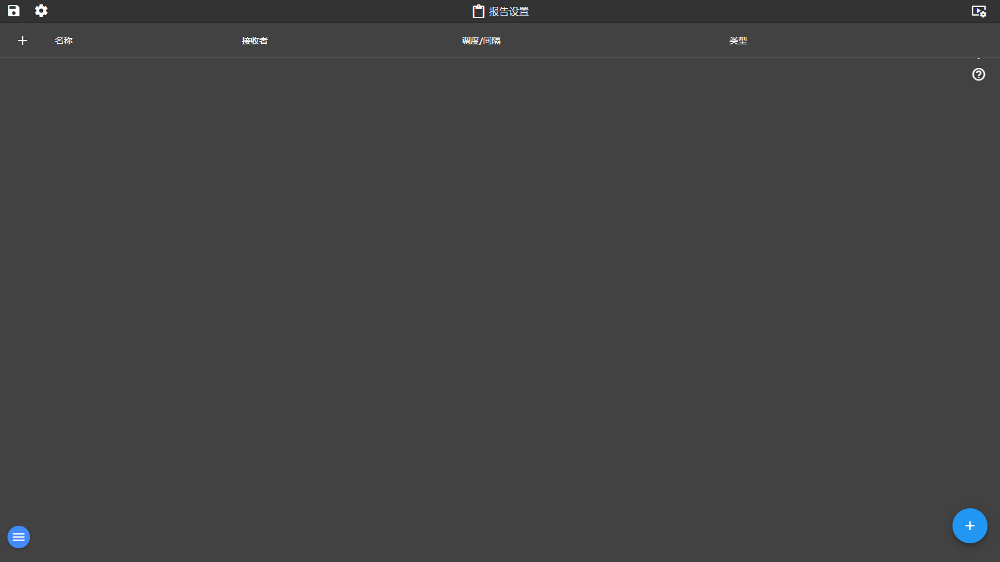

9. 报表
入口：左侧菜单「报表」 · 路由 /reports · 页面标题「报告设置」 · 支持定时生成与邮件接收
功能概述
报表模块把标签数据、报警历史与图表编排成可定时生成的 PDF 报告：报表列表管理全部报告（新建/编辑/立即生成/删除/历史文件下载）；报表编辑器以「内容项」方式组织版面——文本、标签表、警报历史、图表四类内容自由组合，并支持页面大小/方向/边距等页面设置。
界面说明

图 9-1 报表列表与编辑器（当前交付版实际截图）
| 区域 | 说明 |
|---|
| ① 标题栏 | 页面标题「报告设置」。 |
| ② 报表列表 | 表格列：名称、接收者、调度/间隔、类型；点列头排序。行内操作按钮：✎ 编辑、▸ 展开历史文件、▶ 立即生成、× 删除；左上 + 新建报告。 |
| ③ 历史文件区 | 点 ▸ 展开某行后，列出该报表已生成的文件，每个文件带下载（download 图标）与删除按钮。 |
| ④ 报表编辑器（对话框） | 左栏：名称、接收者电子邮件、报告调度（禁用 / 每一天 / 每星期 / 每个月）；「内容」选项卡顶部 ⊕ 菜单添加内容项：添加文本、添加标签表、添加警报历史、添加图表；下方为内容项列表（每项带编辑与删除图标）。 |
| ⑤ 内容项属性 | 文本：文本、字体大小、文本对齐；标签表：表列标签、添加标签、设置标签、对齐、删除列；警报历史：数据范围（无/年度/季度/班次/最后一天(0-24)/上周(周一至周日)/上个月）、间隔（5/10/15/30 分钟、1 小时、1 天）、功能类型（Min/最大/平均/总和）、警报优先级与警报列、Alarms filter；图表：图表名称、宽度、高度。 |
| ⑥ 页面设置 | 页面大小、页面方向（场景=横向 / 肖像=纵向）、左/顶/右/底间距。 |
逐步操作
新建一张日报
- 点击左侧菜单「报表」进入列表，点左上 + 打开报告编辑器。
- 填写「名称」（如：全矿日报）与「接收者电子邮件」（多个收件人用于定时推送）。
- 「报告调度」选择「每一天」。
- 在「内容」选项卡点 ⊕ → 「添加文本」，输入报表标题文字（如“全矿 AI 报警日报”），设置字体大小与对齐。
- 再点 ⊕ → 「添加警报历史」：数据范围选「最后一天（0-24）」，间隔选「1 小时」，功能类型选「总和」。
- 需要数据表时点 ⊕ → 「添加标签表」，用「添加标签 / 设置标签」编排列。
- 切换到「页面设置」，选择页面大小与方向（横向推荐），保存对话框。
立即生成并下载
- 回到报表列表，找到该报表行，点击 ▶（立即生成）。
- 生成完成后点该行 ▸ 展开历史文件区。
- 点击文件旁的下载图标，保存 PDF 到本机查看。
修改与删除
- 点行内 ✎ 重新打开编辑器修改任意字段与内容项。
- 删除内容项：在编辑器内容列表中点该项的删除图标。
- 删除整张报表：列表行尾 ×，确认后移除（历史文件一并清理）。
提示与常见问题
- 定时邮件收不到？ 邮件推送依赖系统设置中的 SMTP（主机/端口/发件人/账号）配置，且「接收者电子邮件」需为合法地址，多个地址用分号分隔。
- 调度「禁用」是什么效果？ 报表不再自动生成，但仍可随时手动 ▶ 生成。
- 图表项添加不了？ 添加图表项需要工程中已配置图表资源且当前环境支持图表导出；不满足时菜单项隐藏。
- 警报历史项没数据？ 检查数据范围是否覆盖有报警记录的时段，以及报警优先级过滤条件是否过窄。
← 上一章 · 返回目录 · 下一章 →